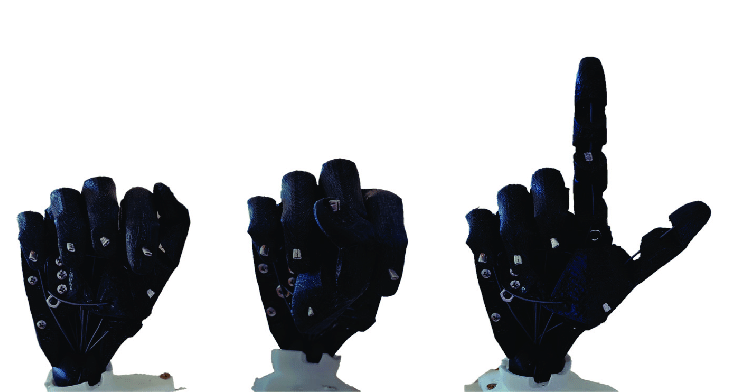
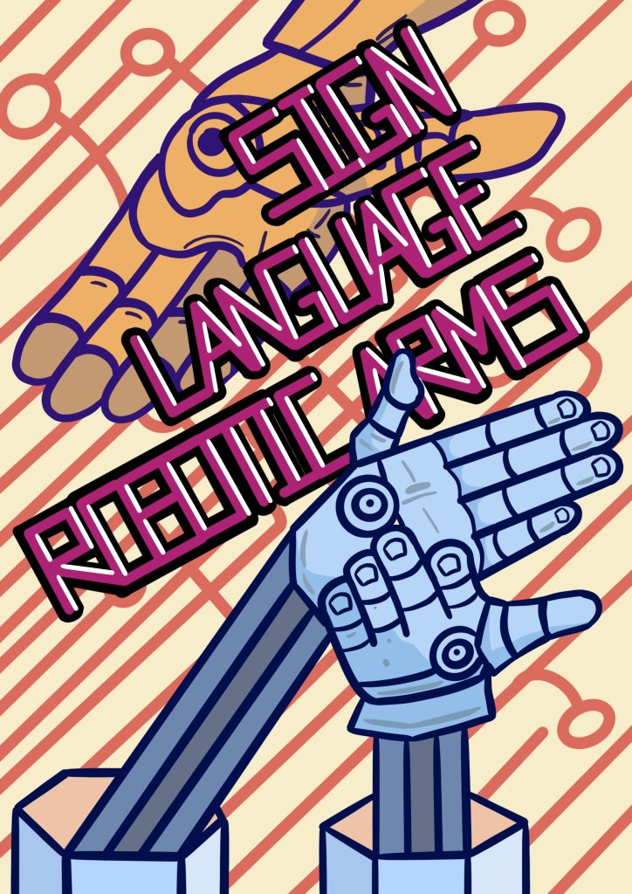

Overview
The goal of this project is to design and create a robot system capable of communicating through sign language. We hope to provide convenience for users who rely on sign language as the primary means of communication by combining technology with accessible design. This highly aligns with our interest in integrating creative computing, robotics, and user experience.

The inspiration for this project stems from the use of robotics to promote inclusivity and accessibility. Robots capable of using sign language can provide a communication bridge for the deaf community in the absence of sign language interpreters. Moreover, this project is a challenge for us, requiring us to integrate the principles of creative computing, robotics, and user experience into one system.
Preliminary Plan
Hardware:
- Robot Arms: The system will utilize two robot arms capable of precisely controlling the movements of fingers and joints to simulate the actions required for sign language.
- Actuators and Sensors: High-precision actuators will be used to control the arm movements, and sensors will provide feedback to ensure the accuracy of the actions.
Software:
- Gesture Programming: We plan to use motion capture data or pre-written instructions to enable the robot arms to perform American Sign Language (ASL) gestures.
Testing:
- We will invite proficient sign language users to test the robot to ensure the accuracy and naturalness of the movements.
Potential Challenges
- Precision and Fidelity: Achieving smooth and natural movements of the robot arms requires very precise programming and highly responsive hardware.
- Complexity of Sign Language: Sign language not only involves gestures but also expressions and spatial awareness, which may be difficult to fully replicate.

This is the poster I designed for it.
This project provides me with an excellent opportunity to gain a deep understanding of the principles and applications of robotics and motion control. In exploring how technology promotes inclusivity and accessible design, I can have a more comprehensive understanding of the important role of technology in improving people’s lives, especially when creating a convenient and equitable usage environment for specific groups.
Moving ahead, practical plans include several essential steps. Firstly, we’ll conduct in – depth research. This means delving into existing sign – language robot projects, dissecting their best practices. By doing so, we aim to pinpoint the current technological voids and areas of improvement.
Next, we’ll commence prototype development. During this stage, we’ll carry out preliminary tests on the robot’s arm movements. The spotlight will be on testing the recognition and execution of fundamental gestures.
Finally, we’ll run iterative tests and optimisations. We will continuously adjust and improve the prototype. This consistent effort is important for the project’s successful execution and achievement of our targeted goals.